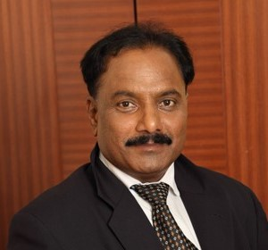
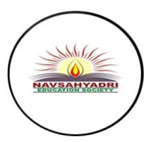

Hon.P.N.Suke (President, NESGI)
Changing the panorama of a rural and barren hill in Naigaon (Nasrapur) near Pune, where there was not even way to go up, and come down. The founder president of Navsahyadri Education Society's Group of Institutions, Mr.P.N.Suke carved path of technical educational hub.
He is a man of great vision, who is totally committed to the development of technical education and the cause of raising the qualities of life of the Indian masses for the betterment of tomorrow. Navsahyadri Education Society's Group of Institutions is long cherished dream of Mr.P.N.Suke, which came into reality with beginning of six institutes including Polytechnic, Engineering,MBA,MCA and gurukul.
One special personality trait of Mr.P.N.Suke is absence of egoism and self-importance. Therefore, he is always easily accessible, modest, and open to new ideas and he makes profound impact on any individual, group or mass of people who happen to meet him.
Hon. Mr.P.N.Suke is visionary leader and leading industrialist in this era. He encourages youth of India with determination, commitment and principle of providing quality education for all.

"Quality Education for all"
The logo of NESGI has been created considering the importance of light. It is divine light lamp in education. Light symbolizes knowledge. Knowledge is the everlasting wealth a that is capable of removing ignorance just as the light removes darkness. Our logo implies victory of light over darkens; in other words victory of knowledge and wisdom over ignorance. Education is the only power which makes everyone knowledgeable and wise.
The flame of a lamp always burns upwards and similarly one should acquire such knowledge as to take us towards higher ideals. It’s a tradition to light a lamp first before starting any auspicious events or rituals. Light symbolizes the absence of darkness, grief unhappiness. Almighty’s divine grace is spread all over the house by lighting the lamps. God’s first and foremost appearance is in the form of Light which we call as ‘Divya Jyotir’ or “Divine Light”. Before starting our daily prayers, we light the Oil lamp by chanting a shloka:
Subham Karoti Kalyanam Arogyam Dhana Sampadah |
Shatru Buddhi Vinashaya Deepa Jyotir Namostute ||
Quality Policy -
NESGI provides the future achievers/performers the right amount of knowledge skills and attitude for the purpose of business and life in general by creating academic excellence in the field of management and engineering.